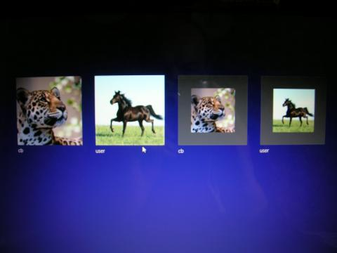

I meanwhile reinstalled W8. Everything seems OK... What happened ? I don't know. Thanks for your attention.
| Classic Shell http://www.classicshell.net/forum/ |
|
| Account icons appear twice in the user selection screen http://www.classicshell.net/forum/viewtopic.php?f=12&t=72 |
Page 1 of 1 |
| Author: | mabille [ Sat Jan 12, 2013 2:21 pm ] |
| Post subject: | Account icons appear twice in the user selection screen |
Hi, I install classicshellsetup on my Windows 8 computer. Everything works fine except that the available two users appear twice on the selection screen. I've got two users: user1 and user2, the selection screen displays: "user1 user2 user1 user2" (the last two with a smaller avatar picture) ?? Any clue ? Thanks |
|
| Author: | Ivo [ Sat Jan 12, 2013 2:29 pm ] |
| Post subject: | Re: Account icons appear twice in the user selection screen |
What selection screen? The one where you log in? Classic Shell doesn't affect that screen in any way. Can you provide a screenshot? |
|
| Author: | mabille [ Sun Jan 13, 2013 4:38 am ] |
| Post subject: | Re: Account icons appear twice in the user selection screen |
The screen where Ilog in. This is a screenshot taken with a camera. Sorry for the quality.  Note: Laptop Acer Aspire 5536G, dual boot W7/W8. Thanks |
|
| Author: | Jcee [ Sun Jan 13, 2013 5:58 am ] |
| Post subject: | Re: Account icons appear twice in the user selection screen |
pretty sure its not a classic shell issue, but if you want to try disabling classic shell and restarting to see if the problem is solved (it probably wont be) this is what i came up with on a quick google search ("Duplicate user account being created in Windows 8"), and it looks like it may fix ur problem: http://superuser.com/questions/495158/d ... -windows-8 if you have any security software that aides in log-in that would be the best place to look (finger print scanner, ect) |
|
| Author: | mabille [ Tue Jan 15, 2013 3:47 am ] |
| Post subject: | Re: Account icons appear twice in the user selection screen |
I meanwhile reinstalled W8. Everything seems OK... What happened ? I don't know. Thanks for your attention. |
|
| Page 1 of 1 | All times are UTC - 8 hours [ DST ] |
| Powered by phpBB® Forum Software © phpBB Group https://www.phpbb.com/ |
|